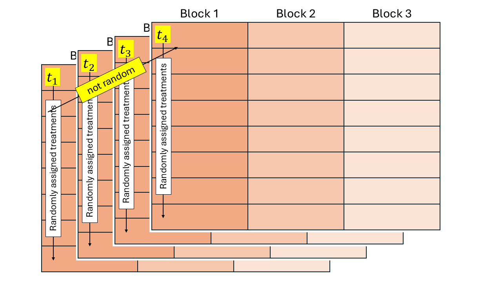
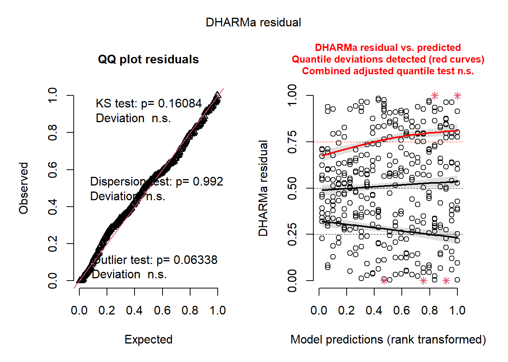
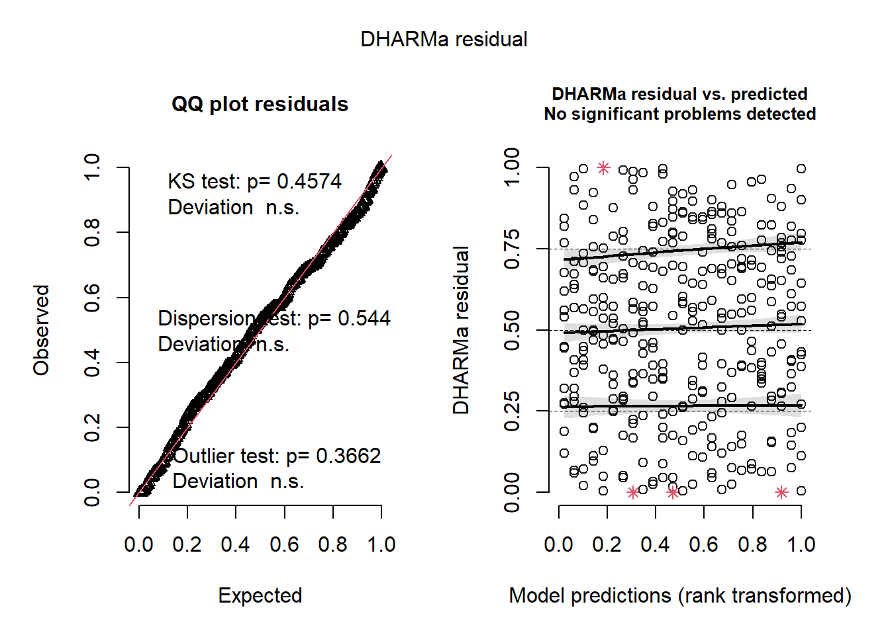

4 Día 2 (tarde): Conexión entre diseños experimentales y modelos estadísticos.
4.1 Repeated measures designs
Repeated measures designs are similar to split-plot designs, where time is at the subplot level. However, an important difference is that time cannot be randomly allocated, because it is unidirectional! The independence assumption does not hold and should be included in the model.

\[y_{ijk} = \mu + \tau_i + \alpha_j + (\tau \alpha)_{ij} + u_{k} + v_{ijk} + \varepsilon_{ijk},\\ u_{k} \sim N(0, \sigma^2_u),\]
where \(y_{ijk}\) is the observation for the \(i\)th treatment, \(j\)th time, in the \(k\)th block, \(\mu\) is the overall mean, \(\tau_i\) is the main effect of the \(i\)th level of treatment factor 1 (treatment), \(\alpha_j\) is the main effect of the \(j\)th level of treatment factor 2 (time), \((\tau \alpha)_{ij}\) is their interaction, \(u_k\) is the random effect of the \(k\)th block, \(v_{ijk}\) is the random effect of the \(i\)th “miniblock” (whole plot) at the \(j\)th time, in the \(k\)th block, and \(\varepsilon_{ijk}\) is the residual.
This time, unlike split-plots, \(v_{ijk} \nsim N(0, \sigma^2_v)\) because the treatment levels are not randomly assigned! Time is unidirectional and cannot be randomized. We can describe how different observations of a treatment \(i\) in block \(k\) are correlated, by looking at the distribution of \(\mathbf{v}_{ik}\):
\[\mathbf{v}_{ik} \sim N(\boldsymbol{0}, \Sigma_{v, ik}), \\ \Sigma_{v, ik} = \sigma^2_v \begin{bmatrix} 1 & \rho & \rho^2 \\ \rho & 1 & \rho \\ \rho^2 & \rho & 1\end{bmatrix}.\]
This example shows a first order autoregressive covariance structure. Other covariance functions include the compound symmetry covariance function, \[\mathbf{v}_{ik} \sim N(\boldsymbol{0}, \Sigma_{v, ik}), \\ \Sigma_{v, ik} = \sigma^2_v \begin{bmatrix} 1 & \rho & \rho \\ \rho & 1 & \rho \\ \rho & \rho & 1\end{bmatrix}.\] and the unstructured covariance function, \[\mathbf{v}_{ik} \sim N(\boldsymbol{0}, \Sigma_{v, ik}), \\ \Sigma_{v, ik} = \sigma^2_v \begin{bmatrix} 1 & \sigma_{12} & \sigma_{13} \\ \sigma_{21} & 1 & \sigma_{23} \\ \sigma_{31} & \sigma_{32} & 1\end{bmatrix}.\]
Note that we are still affecting the \(\mathbf{G}\) matrix, not the \(\mathbf{R}\) matrix – the residuals \(\varepsilon_{ijk}\) are still iid normal. This difference may affect inference in non-normal responses (not the case yet), and is typically a modeling decision that should be carefully considered by the scientist. For other types of correlation functions and a discussion of the implications of G-side versus R-side correlations see Johnson and Milliken (2009), Stroup et al. (2024), and Muff et al. (2016).
4.1.1 Model selection for different covariance structures
How do we know what the best covariance structure is?
| Covariance function | Abbreviations | Number of parameters estimated | Formula |
|---|---|---|---|
| No covariance | 1: \(\sigma\) | \(\boldsymbol{\Sigma}_{ik} = \sigma^2 \begin{bmatrix} 1 & 0 & 0 & 0 & 0 \\ 0 & 1 & 0 & 0 & 0 \\ 0 & 0 & 1 & 0 & 0 \\ 0 & 0 & 0 & 1 & 0 \\ 0 & 0 & 0 & 0 & 1\\ \end{bmatrix}\) | |
| Compound symmetry (homogeneous) | CS | 2: \(\sigma\) and \(\rho\) | \(\boldsymbol{\Sigma}_{ik} = \sigma^2 \begin{bmatrix} 1 & \rho & \rho & \rho & \rho \\ \rho & 1 & \rho & \rho & \rho \\ \rho & \rho & 1 & \rho & \rho \\ \rho & \rho & \rho & 1 & \rho \\ \rho & \rho & \rho & \rho & 1\\ \end{bmatrix}\) |
| First-order autoregressive (homogeneous) | AR(1) | 2: \(\sigma\) and \(\rho\) | \(\boldsymbol{\Sigma}_{ik} = \sigma^2 \begin{bmatrix} 1 & \rho & \rho^2 & \rho^3 & \rho^4 \\ \rho & 1 & \rho & \rho^2 & \rho^3 \\ \rho^2 & \rho & 1 & \rho & \rho^2 \\ \rho^3 & \rho^2 & \rho & 1 & \rho \\ \rho^4 & \rho^3 & \rho^2 & \rho & 1\\ \end{bmatrix}\) |
| Toeplitz (homogeneous) | Toeplitz | \(t\) | \(\boldsymbol{\Sigma}_{ik} = \begin{bmatrix} \sigma^2 & \sigma_1 & \sigma_2 & \sigma_3 & \sigma_4 \\ \sigma_1 & \sigma^2 & \sigma_1 & \sigma_2 & \sigma_3 \\ \sigma_2 & \sigma_1 & \sigma^2 & \sigma_1 & \sigma_2 \\ \sigma_3 & \sigma_2 & \sigma_1 & \sigma^2 & \rho \\ \sigma_4 & \sigma_3 & \sigma_2 & \sigma_1 & \sigma^2\\ \end{bmatrix}\) |
| Heterogeneous compound symmetry | CS | \(t+1\) | \(\boldsymbol{\Sigma}_{ik} = \sigma^2 \begin{bmatrix} \sigma^2_1 & \sigma_1 \sigma_2 \rho & \sigma_1 \sigma_3 \rho & \sigma_1 \sigma_4 \rho & \sigma_1 \sigma_5 \rho \\ \sigma_2 \sigma_1 \rho & \sigma^2_2 & \sigma_2 \sigma_3 \rho & \sigma_2 \sigma_4 \rho & \sigma_2 \sigma_5 \rho \\ \sigma_3 \sigma_1 & \sigma_3 \sigma_2 \rho & \sigma^2_3 & \sigma_3 \sigma_4 \rho & \sigma_3 \sigma_5 \rho \\ \sigma_4 \sigma_1 \rho & \sigma_4 \sigma_2 \rho & \sigma_4 \sigma_3 \rho & \sigma^2_4 & \sigma_4 \sigma_5 \rho \\ \sigma_5 \sigma_1 \rho & \sigma_5 \sigma_2 \rho & \sigma_5 \sigma_3 \rho & \sigma_5 \sigma_4 \rho & \sigma^2_5\\ \end{bmatrix}\) |
| Unstructured | UN | \(t(t+1)/2\) | \(\boldsymbol{\Sigma}_{ik} = \begin{bmatrix} \sigma^2_{1} & \sigma_{12} & \sigma_{13} & \sigma_{14} & \sigma_{15} \\ & \sigma^2_{2} & \sigma_{23} & \sigma_{24} & \sigma_{25} \\ & & \sigma^2_{3} & \sigma_{34} & \sigma_{35} \\ & & & \sigma^2_{4} & \sigma_{45} \\ & & & & \sigma^2_{5} \\ \end{bmatrix}\) |
4.2 Selecting the covariance structure
How do we decide what’s the best covariance structure for our data?
- Over-modeling correlation compromises power and under-modeling compromises type I error control.
- Information criteria:
- Used as a metric for predictive ability and model fit.
- Lower value = better
- No general rule about AIC magnitude
- Akaike Information Criterion (AIC): \(\text{AIC} = 2p - 2 \ln(\hat{L})\)
- AICC: correction for small sample sizes \(\text{AICc} = \text{AIC} + \frac{2p^2+2p}{n-p-1}\)
- Bayesian Information Criterion (BIC) \(\text{BIC} = p \log(n) -2\log(\hat{L})\)
- [\(p\): number of parameters estimated in the model, \(\hat{L}\): likelihood for the model, \(\hat{L}=p(\mathbf{y}\vert \hat{\boldsymbol{\beta}}, M)\)]
- Plot covariance as a function of distance (could be time or space).
- Likelihood ratio tests are not always reliable for mixed models [see Bolker’s GLMM FAQ]
- Is there a clear reasonable assumption about the data-generating process?
- Use UN as the reference:
- UN covariance structure is the most complex because it is estimating unique \(\sigma\)s for each pair of time points
- Select the covariance structure that is most similar to UN.
4.2.1 Applied example
The data were generated by an experiment that studied the effects of different feeding treatments on pigs. A total of 350 pigs were used in this study, with dietary treatment applied to each pen in a completely randomized design. Pig body temperature was measured at 5 points in time. The researchers wished to know if the feeding treatments affect body temperature.
\[y_{ijk} = \mu + \tau_i + \alpha_j + (\tau \alpha)_{ij} + u_{k} + v_{i j k} + \varepsilon_{ijk},\\ u_{k} \sim N(0, \sigma^2_u), \\ \varepsilon_{ijk} \sim N(0, \sigma^2),\]
where \(y_{ij}\) is the observed temperature for the \(i\)th feed treatment,
in the \(k\)th pen,
on the \(j\)th day,
\(\mu\) is the overall mean,
\(\tau_i\) is the (fixed) effect of the \(i\)th feed treatment,
\(\alpha_j\) is the (fixed) effect of the \(j\)th day,
\((\tau \alpha)_{ij}\) is the interaction between the \(i\)th feed treatment and the \(j\)th day,
\(\varepsilon_{ijk}\) is the residual (i.e., the difference between predicted and observed) of the \(i\)th feed treatment,
in the \(k\)th pen,
on the \(j\)th day,
Note that we didn’t specify the distribution for \(v_{i j k}\). Normally we would have said \(v_{ijk} \sim N(0, \sigma^2_v)\), but now, the observations are not completely independent because they are following the same experimental unit through time. Assuming a first-order autoregressive structure, we can say
\[\mathbf{v}_{i k} \sim N(\boldsymbol{0}, \Sigma_{v,ik}), \\ \Sigma_{v,ik} = \sigma_v^2 \begin{bmatrix} 1 & \rho & \rho^2 & \rho^3 & \rho^4 \\ \rho & 1 & \rho & \rho^2 & \rho^3 \\ \rho^2 & \rho & 1 & \rho & \rho^2 \\ \rho^3 & \rho^2 & \rho & 1 & \rho \\ \rho^4 & \rho^3 & \rho^2 & \rho & 1 \end{bmatrix}.\]
dd_temp <- read.csv("../data/temperature_2.csv")
options(contrasts = c("contr.treatment", "contr.poly"))
dd_temp$Pig <- as.factor(dd_temp$Pig)
dd_temp$Treatment <- as.factor(dd_temp$Treatment)
dd_temp$Pen <- as.factor(dd_temp$Pen)
dd_temp$Time <- as.factor(dd_temp$Time)
dd_temp$Temperature_F <- (dd_temp$Temperature_C *9/5) + 32
m_repeated_ar1 <-
glmmTMB(Temperature_F ~ Treatment * Time + ar1(0 + Time |Pen),
REML = TRUE,
family = gaussian(link = "identity"),
data = dd_temp)m_repeated_toep <-
glmmTMB(Temperature_F ~ Treatment * Time + toep(0 + Time |Pen) ,
REML = TRUE,
family = gaussian(link = "identity"),
data = dd_temp)

## df AIC
## m_repeated_ar1 28 888.730
## m_repeated_toep 35 838.632## df BIC
## m_repeated_ar1 28 996.7521
## m_repeated_toep 35 973.6597## [1] 893.7892## [1] 846.6575marginal_means_temp <- emmeans(m_repeated_toep, ~ Treatment|Time)
cld(marginal_means_temp,
adjust = "sidak",
Letters = letters)## Time = 0:
## Treatment emmean SE df asymp.LCL asymp.UCL .group
## A 103.7 0.142 Inf 103.3 104.1 a
## D 103.8 0.142 Inf 103.5 104.2 a
## B 103.9 0.142 Inf 103.5 104.3 a
## E 103.9 0.142 Inf 103.6 104.3 a
## C 104.0 0.142 Inf 103.6 104.3 a
##
## Time = 2:
## Treatment emmean SE df asymp.LCL asymp.UCL .group
## A 104.8 0.253 Inf 104.2 105.5 a
## E 105.0 0.253 Inf 104.3 105.6 a
## B 105.1 0.253 Inf 104.5 105.8 a
## C 105.4 0.253 Inf 104.8 106.1 a
## D 105.7 0.253 Inf 105.0 106.3 a
##
## Time = 4:
## Treatment emmean SE df asymp.LCL asymp.UCL .group
## B 104.4 0.344 Inf 103.6 105.3 a
## A 104.8 0.344 Inf 103.9 105.7 a
## E 104.9 0.344 Inf 104.0 105.8 a
## C 105.1 0.344 Inf 104.2 106.0 a
## D 105.3 0.344 Inf 104.4 106.2 a
##
## Time = 6:
## Treatment emmean SE df asymp.LCL asymp.UCL .group
## E 104.1 0.221 Inf 103.6 104.7 a
## B 104.5 0.221 Inf 103.9 105.1 a
## A 104.5 0.221 Inf 103.9 105.1 a
## D 104.8 0.221 Inf 104.3 105.4 a
## C 104.9 0.221 Inf 104.3 105.4 a
##
## Time = 12:
## Treatment emmean SE df asymp.LCL asymp.UCL .group
## E 103.8 0.213 Inf 103.2 104.3 a
## A 103.9 0.213 Inf 103.4 104.5 a
## B 104.0 0.213 Inf 103.5 104.6 a
## D 104.1 0.213 Inf 103.5 104.6 a
## C 104.3 0.213 Inf 103.7 104.8 a
##
## Confidence level used: 0.95
## Conf-level adjustment: sidak method for 5 estimates
## P value adjustment: sidak method for 10 tests
## significance level used: alpha = 0.05
## NOTE: If two or more means share the same grouping symbol,
## then we cannot show them to be different.
## But we also did not show them to be the same.4.3 Modeling the time dependence: conditional versus marginal
Time dependencies can be specified on the \(\mathbf{G}\) matrix, or in the \(\mathbf{R}\) matrix.
- What’s the focus of the study:
- Example: following a population of animals/plants versus following a single animal/plant.
- “Conditional and Marginal Models: Another View” Lee and Nelder (2004)
4.4 In-class exercise
(Get R code.). Re-analyze the data and provide the answer to the client.
4.5 Resources
- Guidelines for Selecting the Covariance Structure in Mixed Model Analysis [link]
4.6 Tarea
- Read Gelman (2012)